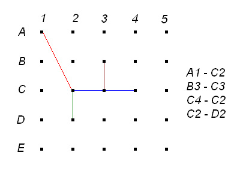

|
A simple task!! You will be given the end points of some line segments. Just draw them. Too easy, right???
You decide to challenge yourself and thus plan to add some constraints.
1] Start from the end point of any line segment.
2] Do not lift your pen off the paper.
3] You can go over a line more than once.
4] Do not draw any line other than the ones mentioned.
5] You can only change direction at integer coordinates of x & y.
6] Use the least amount of ink needed.
You need 1 unit of ink to draw one unit of line. Distances between successive points are 1 unit.
So Distance (A1 to B1) = 1 unit and Distance (A1 to A2) = 1 unit.
The first line of input is an integer T(T<20) that indicates the total number of test cases. Each case starts with an integer N(N<10). Then N lines follow, each describing a line segment. A line segment is defined by two points Y1X1 Y2X2. Y1 and Y2 will be from [A,E]. X1 and X2 will be from [1,5]. The first sample is taken from the figure above. So look at the sample for exact format.
For each case, output the case number followed by the total amount of ink requried with 2 digits after the decimal point. If the lines can’t be drawn without lifting the pen then print ~x( instead.
|
Sample Input |
Output for Sample Input |
24A1 C2B3 C3C4 C2C2 D22A1 A5E1 E5 |
Case 1: 8.24Case 2: ~x( |
Problem Setter: Sohel Hafiz
Special Thanks: Jane Alam Jan